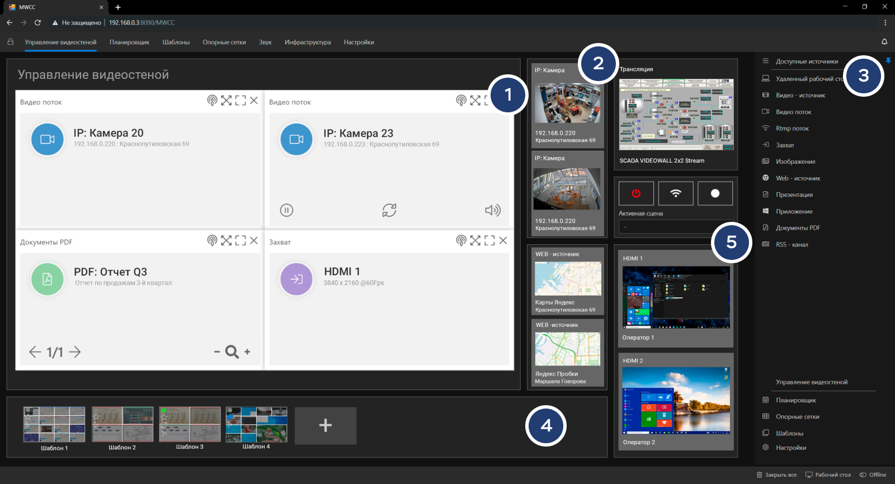
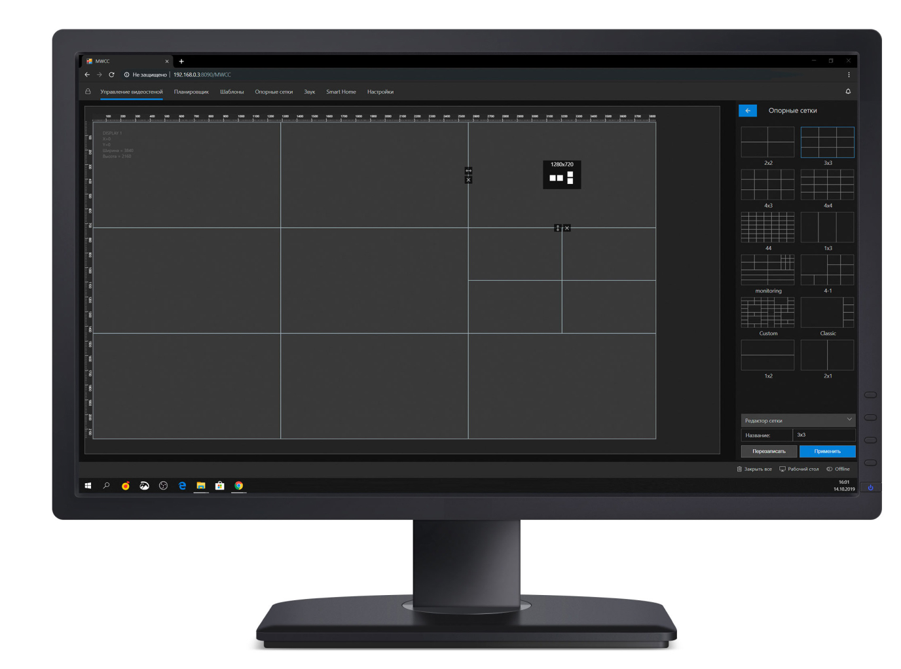
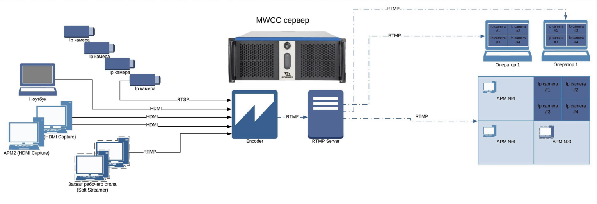
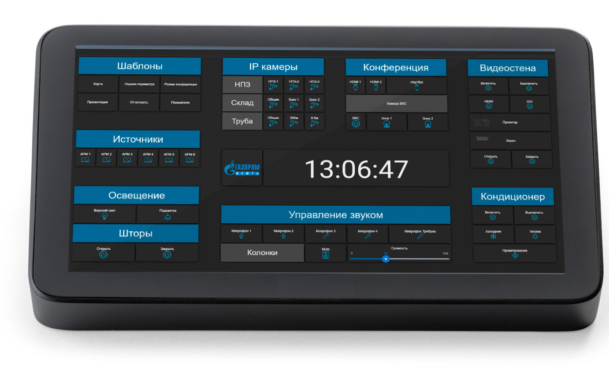
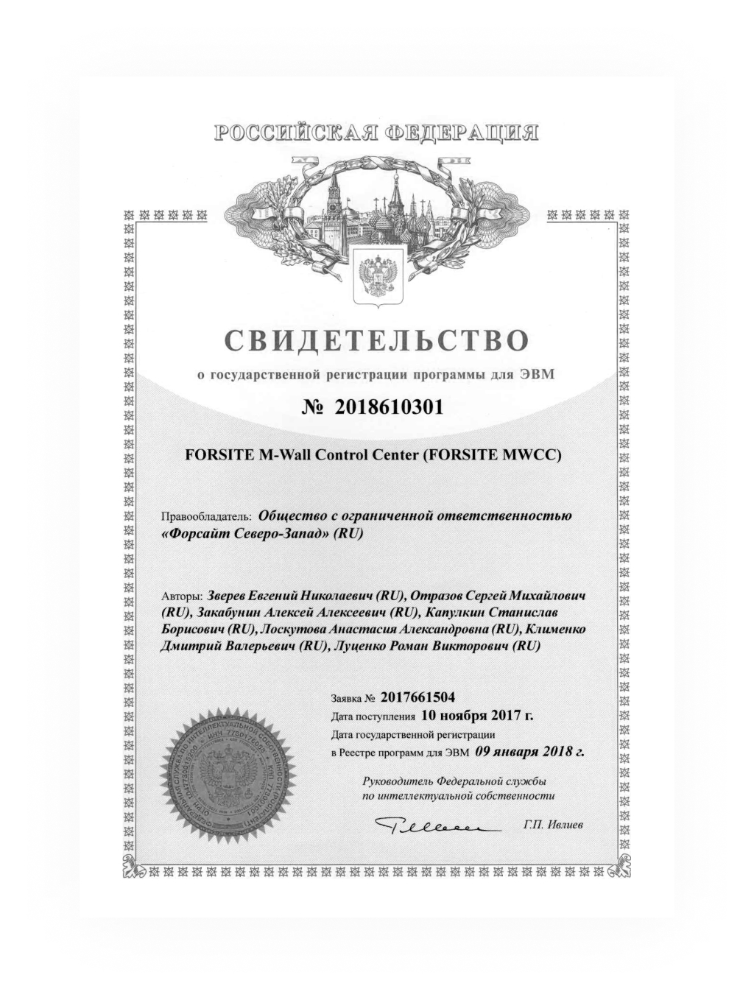

Объемы рабочих данных постоянно увеличиваются, и профессио-налам в любой области как никогда важно эффективно управлять своим рабочим пространством.
Программный комплекс MWCC - это универсальный способ управ-ления выводом контента на видеостену высокого разрешения. MWCC отличает интуитивный интерфейс для визуализации всего рабочего пространства и простого управления большим количеством источников и приложений на видеостенах. Используйте свое рабочее пространство эффективно, разбивая полиэкран на несколько рабочих областей посредством создания произвольных сеток.
MWCC — это клиент-серверное приложение, позволяющее управ-лять выводом на видеостену аппаратных видеовходов про-фессиональных плат видеозахвата и программных источников (Видеопоток, HTML-контент, IP-поток, Презентации, Изображения, PDF, вывод удаленных рабочих столов VNC и RDP), а также из-менять расположение окон запущенных WINDOWS приложений и получать доступ к удаленному управлению.
Приложение состоит из 2-х модулей:
- Серверная часть: предустанавливается на контроллер отвечает за вывод источников, шаблонов, предустановленных сеток, запуск приложений.
- Клиентская часть: позволяет управлять выводом контента, мас-штабированием и координатами окон, а также создавать и выводить шаблоны и предустановленные сетки для организации контента на видеостене.
Приемущества MWCC 2.5
Веб-клиент
Управление сервером MWCC осуществляется через простой и удобный Web-клиент. Управляйте вашей видеостеной с любого ПК или ноутбука без необходимости покупать дополнительные лицензии.
Кросс-платформенность
Серверная часть работает на операционных системах MS Windows 10 и на OS LINUX (в том числе ASTRA Linux). “Web-клиент” доступен для всех систем.
Интеграция
Наличие API и возможность запуска произвольных скриптов и приложений позволяет обеспечить легкую интеграцию в любую инфраструктуру.
Кастомизация под заказчика или интегратора
Благодаря собственной команде разработчиков, мы можем оперативно вносить изменения в UI клиента или добавлять поддержку новых функций согласно ТЗ заказчика.

01. Источники
Аппаратный захват
Захват и воспроизведение внешних источников (HDMI | DVI | SDI) в форматах 1080p 60 к/c, 2160p 60 к/с
Удаленный ПК
Вывод удаленного рабочего стола посредством протокола VNC и RDP с поддержкой управления
IP-камеры / RTSP захват
Поддержка потокового видео, IP-камер, Web-камер высокого разрешения, RTSP и RTMP потоков вещания
WEB-страницы
Поддержка web-контента, включая HTML5/WEBGL приложения
Windows Apps
Запуск и управление любыми Windows-приложениями
IP-презентации и PDF
Запуск и управление презентациями PPTX и встроенный просмотрщик PDF
Изображения
Работа с изображениями и фото без ограничений по разрешению
Видео-контент
Воспроизведения видеофайлов различных форматов, в том числе 4K (.avi, .wmv, .mkv)
Бегущая строка
Захват и воспроизведение внешних источников (HDMI | DVI | SDI) в форматах 1080p 60 к/c, 2160p 60 к/с
Механизм управления окнами позволяет быстро создать произвольный источник путем пере-таскивания (Drag-n-Drop) медиа-файла или сетевого источника в рабочую область, интуитивно понятным способом при помощи мыши легко изменять положение окна и размер окна, при не-обходимости подключаясь к источнику для управления с клиентского приложения.
02. Интерфейс администратора

Основные возможности: Полностью модульный интерфейс с возможностью гибкой настройки пользовательских дашбордов и виджетов.
Функциональные блоки:
1 Управление видеостеной
2 Предпросмотр избранных источников
3 Доступные источники и файловый менеджер
4 Избранные шаблоны
5 Управление модулем потоковой трансляции
Кастомный пользовательский виджет (HTML-код)
- Возможность Realtime-просмотра источников контента
- Организация и быстрый доступ к избранным источникам и шаблонам
- Создание элементов управления инфраструктурой
- Управление окнами и расположением контента на видеостене
- Простой и понятный Drug-n-Drop интерфейс с загрузкой файлов
- Управление и создание опорных сеток для расположения контента
- Управление и запуск предварительно созданных шаблонов
- Модуль обратного управления источниками
- Система мониторинга и управления контроллером и LFD панелями
- Создание и настройка интерфейсов управления для операторов
03.Функционал web-клиента
Источники воспроизведения мультимедийного контента:
- Управление запущенными видео-источниками: поворот, обрезка, наложение логотипа, зуммирование
- Управление уровнем громкости, постановка на паузу, перемотка
- Загрузка контента со станции оператора на видеоконтроллер через встроенный проводник
- Поддержка всех популярных форматов и кодеков
- Высокая производительность при работе с тяжелыми шаблонами, большим количеством IP-потоков и видео в формате 4K.
Веб-источники:
- Проброс элементов управления в web-источник, вперед, назад, зуммирование
- Поддержка авторизации пользователя
- Полный проброс управления в клиент; клавиатура, мышь.
Запуск приложений Windows:
- Запуск и управление любыми Windows-приложениями (SCADA, CAD, офисные пакеты и т.д.)
- Поддержка работы с многооконными Windows-приложениями
- Запуск ассоциированных файлов через встроенный проводник клиента
- Полное управление любым приложением, запущенным на видеостене
- Стабильно высокий FPS в 3D-приложениях при работе в UHD разрешениях.
Модуль обратного управления и предпросмотра:
- Возможность предпросмотра любого запущенного источника, с полным пробросом управления
- Возможность захвата и предпросмотра всей рабочей области видеостены с отображением всех запущенных приложений и источников
- Встроенный web-based VNC-клиент с функцией масштабирования.
Дополнительные возможности клиента:
- Перемещение, удаление, редактирование размера окна источника в режиме реального времени
- Возможность задать произвольное имя источнику и назначить цвет окна в интерфейсе
- Загрузка контента на контроллер через web-интерфейс
- Русифицированный интерфейс программы
- Вход в клиентскую часть по паролю
- Привязывание (прилипание) окон источников к опорной сетке
- Перемещение, удаление, редактирование размера окна источника в режиме реального времени
- Сохранения шаблона (пресета) для последующего быстрого отображения и управления.
Наша идея
Создать простой и понятный инструмент для визуализации контента на видеостене любой сложности.
04. Функционал сервера MWCC
Графическая подсистема:
- Создание единого рабочего стола (полиэкрана) ультравысокого разрешения до 16x16K.
- Максимальное количество дисплеев, подключенное к системе: 32
- Предельное разрешение на 1 видеовыход: 4096x2160 @120Hz и 5120x2880@60Hz
- Аппаратная синхронизация дисплеев видеостены
- Компенсация рамки
- Высокая производительность при работе с высоконагруженными приложениями
- Плавное и синхронизированное отображение без артефактов и разрывов
- Аппаратное GPU ускорение (NVENC), встроенный балансировщик GPU
- Поддержка технологии NVIDIA MOSAIC
- ISV-сертификация более 100 профессиональных приложений
Модуль аппаратного захвата видеосигнала:
- Аппаратный захват видео через интерфейс HDMI / DVI / SDI
- Поддержка профессиональных плат захвата Magewell Capture Pro
- Поддержка профессиональных плат захвата Matrox IPX-серии
- Управление уровнем звука
Встроенный сервер потокового вещания:
- Встроенный многоканальный сервер RTMP с поддержкой live-вещания, ретрансляции и записи.
- Встроенный сервер для трансляции изображения с плат видеозахвата (до 2160p / 60 FPS) с поддержкой GPU ускорения и режима low latency mode
- Удаленное управление локальным и удаленными OBS-cерверами
Общие настройки сервера:
- Настройка конфигурации видеоконтроллера через web-интерфейс
- Резервное копирование и восстановление
- Логирование a
- Авторизация пользователей и синхронизация клиентов
- Модуль лицензии. Лицензия выписывается на контроллер, операторские места не ограничены
- Встроенный VNC-сервер для организации обратного управления произвольным окном источника или операционной системой видеоконтроллера
- Старт / стоп / перезагрузка сервера MWCC
- Перезагрузка / выключение видеоконтроллера
- Подсистема мониторинга нагрузки (CPU, GPU, Memory, LAN)
05. Интерфейс администратора
Опорные сетки

Данный режим работы позволяет максимально просто и эффективно организовать рабочее про-странство на видеостене. Модуль построения опорных сеток позволяет разделить полиэкран на произвольные области, создать опорные сетки, а также быстро изменить расположение и раз-мер окон. Созданные сетки можно сохранять для быстрого вызова. Для более удобного управ-ления окнами источников в настройках MWCC существует возможность активировать функцию “прилипание” к опорной сетке.
Существует несколько режимов создания опорных сеток, в боковом меню доступен простой и понятный пользователю вариант, аналогичный созданию таблиц в MS WORD либо в любом WYSIWYG-редакторе. Данный режим обычно используется для стандартных сеток 2x2, 3x3, 4x4. В расширенном режиме можно создать абсолютно любую произвольную конфигурацию сетки путем ручного изменения координат, разделения, удаления опорных линий, интеграции сетки в сетку и т.д.
06. Модуль потоковое вещание

Встроенный RTMP-CЕРВЕР
В сервер MWCC 2.5 встроен полноценный сервер для организации потокового вещания, по-зволяющий принимать и ретранслировать RTMP-видеопотоки с других серверов MWCC или с АРМ-операторов. RTMP-поток может приниматься для повторного использования и вос-произведения любым плеером в вашей сетевой инфраструктуре или воспроизводиться в качестве дополнительного источника на видеостене.
Основные возможности и области применения:
- Вывод на видеостену изображения с программного или аппаратного стримера, установленно-го на другом сервере MWCC, или программного стримера, вещающего с АРМ-оператора.
- Отображение рабочей области видеостены на другие сетевые плееры в сети (клонирование изображения рабочего стола видеостены на LFD-панель находящуюся в другом помещении).
- Запись заданной области видеостены или отдельного источника с поддержкой разрешения 2160p и 60 FPS в фоновом режиме.
- Трансляция в фоновом режиме изображения с портов плат видеозахвата в фоновом режиме с возможностью удаленного управления. Поддерживаются разрешения 720p / 1080p / 2160p
- H.264 с поддержкой Intel Quick Sync Video (QSV), Nvidia NVENC
- Встроенная поддержка удаленного управления локальным или удаленными серверами Open Broadcaster Software (OBS)- с возможностью захвата изображения с устройств захвата и источни-ков в реальном времени, композицию сцен с поддержкой опорных сеток, декодировку, запись и вещание.
07. Модуль интеграция & API
Поддержка каскадной схемы:
API интерфейс используется для того, чтобы интегрировать возможности программного обеспе-чения MWCC в любую действующую инфраструктуру. REST API позволяет управлять сервером MWCC удаленно и получать необходимую информацию, отправляя простые HTTP запросы. Поддержка функций: Запуск / остановка шаблонов, Запуск / остановка сохраненных источников по заданным координатам, изменение уровня громкости, управление панелями видеостены (On / Off / смена источника сигнала), перезапуск сервера MWCC / выключение видеоконтроллера
Управление инфраструктурой и интеграция в IOT / Умный дом:
Плагин “MWCC-Binding” позволяет интегрироваться в систему автоматизации OpenHab. Основные возмиожности плагина: Запуск шаблонов / запуск отдельных источников / управление панелями видеостены. Openhab - это сервер позволяющий объединять и управлять различными протоколами IOT таки-ми как: Bluetooth, Epson Projector, Exec (вызов и выполнение команд OS), HTTP, Modbus TCP и RTU, MQTT, PulseAudio, Samsung TV API, LG API, NEC API, Panasonic API, Serial, SNMP, TCP/UDP, Wake-on-LAN, Z-Wave, ZigBee и так далее. Интерфейс MWCC полностью поддерживает интеграцию управляющих элементов компонентами умного дома или вашего инфраструктурного объекта, таким образом вы получаете возможность из одного интерфейса управлять: видеостеной, кондиционированием, освещением, включением и выключением мультимедиа устройств и источников контента и так далее.
08. Интерфейс оператора

Интерфейс управления оператора
В сервер MWCC 2.5 встроен полноценный сервер для организации потокового вещания, по-зволяющий принимать и ретранслировать RTMP-видеопотоки с других серверов MWCC или с АРМ-операторов. RTMP-поток может приниматься для повторного использования и вос-произведения любым плеером в вашей сетевой инфраструктуре или воспроизводиться в качестве дополнительного источника на видеостене.
Управление инфраструктурой и интеграция в IOT / Умный дом:
- Модульный интерфейс с поддержкой виджетов, кнопок, элементов управления
- Запуск / закрытие предварительно сохраненных шаблонов
- Предпросмотр и запуск предварительно сохраненных источников
- Управление громкостью видеоконтроллера
- Интеграция с системами типа Умный дом (например: управление светом, кондиционерами, LFD панелями, проекторами и т.д)
- Интеграция с системами управления звуком
- Мониторинг состояния контроллера, видеостены, датчиков IOT и т.д.
- Сценарии и запуск скриптов автоматизации.
- Включение / выключение видеостены, видеоконтроллера.
- Поддержка звуковых уведомлений.
- Поддержка голосовых ассистентов (Яндекс-Алиса, Google Assistent и т.д.)
СПЕЦИАЛЬНАЯ ВЕРСИЯ
ASTRA LINUX EDITION
Astra Linux – российская операционная система на базе Debian GNU/Linux, ориентированная на защиту конфиденциальной информации и предназначенная для защищённых рабочих станций и серверов. Система, в первую очередь, разработана для спецслужб, государственных предприятий и биз-нес клиентов, для которых важна защита хранимой и обрабатываемой конфиденциальной информации.
Функционал MWCC ASTRA Linux Edition:
- Полностью модульный веб-интерфейс
- Модуль опорные сетки
- Встроенный RTMP сервер потокового вещания
- Модуль аппаратного захвата HDMI / DVI
- Модуль REST API Поддержка функций: Запуск / остановка шаблонов, Запуск / остановка сохраненных источников по заданным координатам, изменение уровня громкости, управление панелями видеостены (On / Off / смена источника сигнала), перезапуск сервера MWCC /выключение видеоконтроллера
- Управление положением и размерами окон запущенных источников:
- Поддержка web-контента, включая HTML5/WEBGL приложения
- Работа с изображениями и фото без ограничений по разрешению
- Воспроизведения видеофайлов различных форматов, в том числе 4K (.avi, .wmv, .mkv)
- Поддержка потокового видео, IP-камер, Web-камер высокого разрешения, RTSP и RTMP потоков вещания
- Привязывание (прилипание) окон источников к опорной сетке
- Перемещение, удаление, редактирование размера окна источника в режиме реального времени
- Управление и запуск предварительно созданных шаблонов
- Возможность задать произвольное имя источнику и назначить цвет окна в интерфейсе
- Загрузка контента на контроллер через web-интерфейс
- Русифицированный интерфейс программы
- Вход в клиентскую часть по паролю
МИНИМАЛЬНЫЕ СИСТЕМНЫЕ ТРЕБОВАНИЯ
Конфигурация оборудования для работы с ПО МWСС 2.5
| Заголовок | Значение |
|---|---|
| Операционная система: | Microsoft Windows 10 PRO / ENT |
| Процессор: | не ниже, чем 6-ядерный Intel® Core™ i7 / Intel® Xeon™ |
| Видеокарта: | NVIDIA QUADRO RTX4000 и выше |
| Память: | не менее 16 Gb DDR4 |
| LAN: | не менее 1Gbit/s |
Требования к рабочему месту оператора / администратора MWCC:
- ПО: Windows (не ниже Microsoft Windows 7), Linux (не ниже Ubuntu 16.04 с GUI или аналогичного по функционалу дистрибутива Linux);
- Процессор: не ниже Intel® Celeron™;
- Видеокарта: Интегрированное видео;
- Память: не менее 4 Gb;
- Сетевая карта: не менее 1 Gbit.
- Браузер: Chrome (Chromium) v.55 и выше. Рекомендуется работать в полноэкранном режиме (Переход в полноэкранный режим – клавиша «F11»).
- Монитор с разрешением не менее 1920x1080 px, рекомендуется использовать монитор
- с разрешением не менее 2560x1440 и выше.
СВИДЕТЕЛЬСТВО
О РЕГИСТРАЦИИ В РЕЕСТРЕ

МОНТАЖ И ПОСТАВКИ
КОМПЛЕКСНЫХ РЕШЕНИЙ
-
Разработка ТЗ
Выясняем задачи клиента, консультируем по особенностям решения разрабатываем тех.задание на проект
-
Регистрация проекта
Регистрация проекта позволяет получить индивидуальные цены и спланировать точные сроки производства оборудования
-
Поставка оборудования
Предварительное тестирование оборудования на нашей сборке, отгрузка оборудования доверенными компаниями-перевозчиками
-
Монтаж
Монтаж и пусконаладочные работы выполняются квалифицированными инженерами и монтажниками.
-
Обучение
Финальный этап внедрения проекта является обучение сотрудников заказчика работе с комплексом.
-
Сервисный контракт
Заключение сервисного контракта с заказчиком на обслуживание видеостены и продление гарантий при необходимости.
Описание монтажных работ, выполняемых нашими специалистами
 МОНТАЖ
МОНТАЖ
ВИДЕОСТЕН
- Подвод электропитания, прокладка подходящих сигнальных кабелей
- Усиление и выравнивание стены
- Изготовление креплений и кронштейнов для видеостены любой сложности
- Изготовление специальной мебели
- Обеспечение требуемых климатических условий
- Монтаж оборудования в телекоммуникационных стойках
- Подготовка существующих источников сигналов и информационных систем для работы с видеостеной.
- Монтаж и юстировка кронштейнов для видеостены
- Монтаж, юстировка и подключение модулей видеостены
- Монтаж коммутационного оборудования
ПУСКОНАЛАДОЧНЫЕ
РАБОТЫ
- Установка юстировочного и управляющего программного обеспечения на управляющий ПК
- Калибровка и настройка модулей видеостены (разрешение, яркость, цветовой баланс)
- Настройка коммутационного оборудования и источников для работы по требуемым сценариям для вывода на видеостене
- Установка и настройка клиентского программного обеспечения на ПК-источники информации для видеостены
- Работы по отладке информационных систем, поставляющих контент (информацию), отображаемый на видеостене
- Обучение специалистов заказчика использованию и администрированию программно-аппаратного комплекса.
ПОДДЕРЖКА
Остались вопросы?
Мы с радостью на них ответим
Если вы не нашли необходимое Вам оборудование или требуется специальная конфигурация напишите нам...
Телефон для связи
Шоурум компании:
Россия, Санкт-Петербург, Маршала Говорова, 52
ЗАПРОС НА ДЕМО ВЕРСИЮ
[Пример: E5-2609v4 / 16Gb / 500Gb / Quadro P4000 / Win 10 Pro